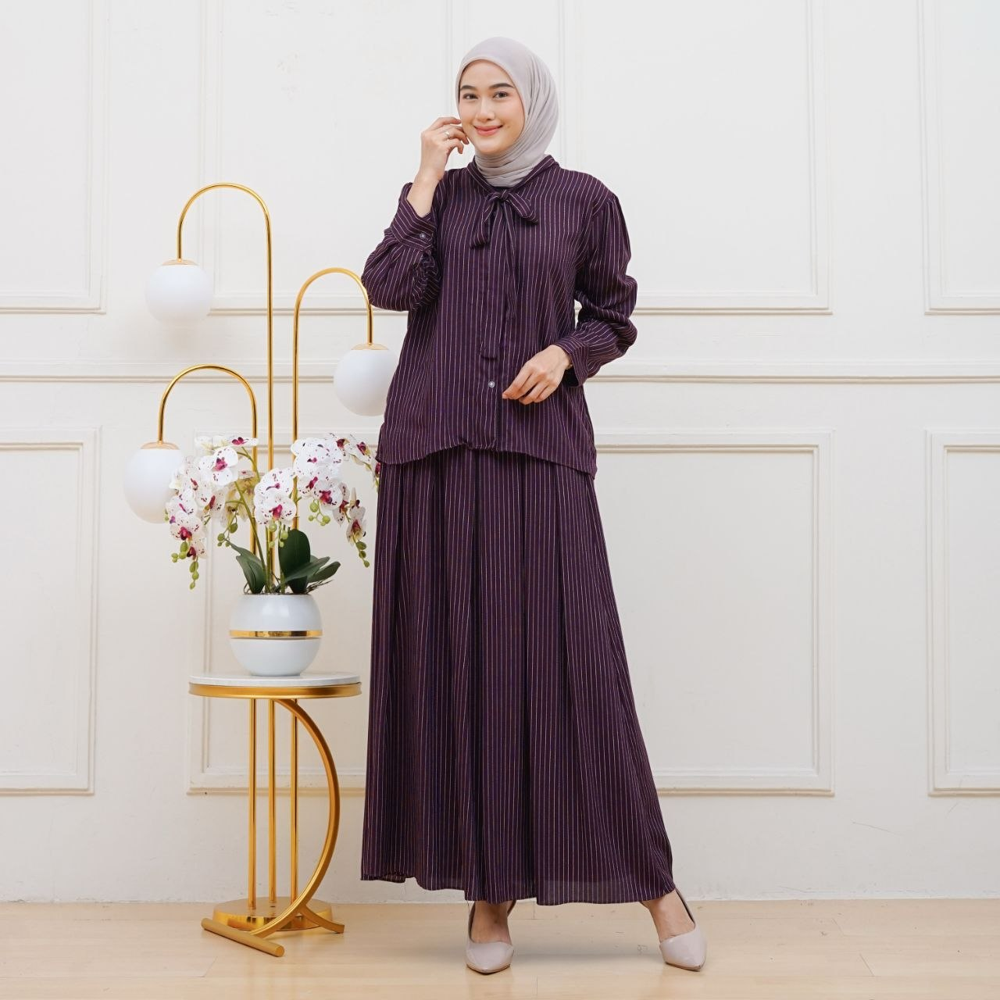
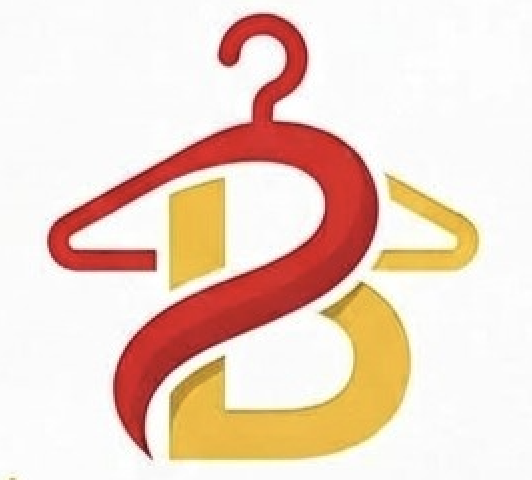

Curated for your everyday
Wear your
own story.
Potongan yang bergerak bersamamu. Warna yang berani bicara. Temukan gaya yang terasa paling kamu.
Eksplor koleksi ↓
BAJUKUEST.
2024FASHION
2024FASHION
01 / 04Aruna set
burgundy
burgundy
scroll to explore
MADE TO MOVE✳MADE TO BE SEEN✳MADE FOR YOU✳MADE TO MOVE✳MADE TO BE SEEN✳
The edit / 01
Pieces with
presence.
Setiap item dipilih untuk menjadi bagian paling effortless dari hari-harimu. Simpel dipakai, sulit dilupakan.
Showing all pieces

The Bajukufeeling
About the feeling
Style is a
conversation.
Kami percaya pakaian bukan sekadar apa yang kamu pakai. Ia adalah cara kamu hadir, mengambil ruang, dan bercerita tanpa perlu menjelaskan apa-apa.
Dari bahan yang nyaman sampai detail yang bikin berhenti sejenak, Bajuku dibuat untuk menemani versi kamu yang terus tumbuh.
Kenalan lebih dekat ↗On repeat
See it.
Feel it.
Gerak, tekstur, dan warna yang lebih terasa saat dilihat bergerak.